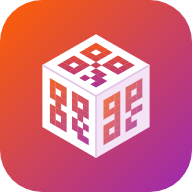

Qube
📱 Mi a Qube?
A Qube a gyártósori munkát segítő telefonos alkalmazás. Modulokból áll – minden modul egy-egy feladatot old meg (például QR kódok készítése a terminálokhoz). A kezdőlapon azokat a modulokat látod, amelyekhez a szerepköröd hozzáférést ad.
Minden modulnak saját súgója van: a modulban alul a ❓ Súgó gombra koppintva részletes leírást kapsz a használatáról.
Csak telefonra készült, álló helyzetben. Tableten és számítógépen is megnyílik, de a kezelőfelület telefonra van optimalizálva.
🧩 Mi az a PWA?
A Qube egy PWA (Progressive Web App): weboldalként működik, de a telefonra alkalmazásként telepíthető.
- Nem kell App Store vagy Google Play – közvetlenül a böngészőből telepíthető.
- Saját ikonja lesz a kezdőképernyőn, és teljes képernyőn, böngészősáv nélkül nyílik meg.
- Alig foglal helyet, és internet nélkül is elindul (lásd lent).
- A frissítéseket magától letölti – nem kell újratelepíteni.
🍎 Telepítés iPhone-ra
- Nyisd meg a Qube linkjét a Safari böngészőben. (Chrome-ból vagy más böngészőből iPhone-on nem telepíthető megfelelően.)
- Koppints alul a Megosztás ikonra (négyzet felfelé mutató nyíllal).
- Görgess le, és válaszd a „Főképernyőhöz adás” lehetőséget.
- Koppints a Hozzáadás gombra.
- Ezután mindig a kezdőképernyőn lévő Qube ikonról indítsd.
🤖 Telepítés Androidra
Chrome böngészővel:
- Nyisd meg a Qube linkjét a Chrome-ban.
- Koppints a jobb felső ⋮ (három pont) menüre.
- Válaszd az „Alkalmazás telepítése” vagy a „Hozzáadás a kezdőképernyőhöz” pontot.
- Erősítsd meg a Telepítés gombbal.
Samsung Internet böngészővel: menü (☰) → Oldal hozzáadása → Kezdőképernyő.
Előfordulhat, hogy a Chrome magától felajánlja a telepítést egy alsó sávban – ilyenkor elég arra koppintani.
👤 Azonosítás és fiók
- Nincs jelszó és belépési oldal. Első indításkor csak a neved és a törzsszámod kell megadni – ez alapján azonosít az app.
- Egy törzsszámhoz egy fiók tartozik. Új fiók mindig Operátor szerepkörrel indul, a szerepköröket az adminisztrátor állítja be.
- A neved a jobb felső ☰ menüben módosíthatod. Ugyanitt választhatsz világos, sötét vagy automatikus megjelenést.
- Telefoncsere vagy a böngészőadatok törlése után az app új eszközként lát, és az „Összekapcsolás folyamatban” felirat jelenik meg. Az adminisztrátor összekapcsolja a régi fiókoddal – ezután a szerepköröd is visszajön, és az oldal magától továbblép. Ehhez nem kell semmit tenned.
📶 Internet nélkül
Ha a Qube-ot egyszer már megnyitottad internettel, utána internet nélkül is elindul.
- A legtöbb modul internet nélkül is használható – hogy pontosan mi, azt a modul ❓ Súgója írja le.
- Amit internet nélkül csinálsz és a szerverre kell kerülnie (pl. naplók, beküldött hibák), az „⏳ feltöltésre vár” jelzéssel megvárja a netet, és utána magától felmegy.
- Internet kell: az első belépéshez, a frissítések letöltéséhez és azokhoz a részekhez, amelyek a szerverről olvasnak (pl. statisztikák, listák szerkesztése).
🔒 Adatkezelés – mi hol tárolódik?
A szerveren (Google Firebase) csak a működéshez szükséges adatok vannak:
- Név, törzsszám, szerepkör, regisztráció és utolsó aktivitás ideje
- A modulok közös adatai (pl. IC lista) és naplói (pl. ki, mikor, mit generált)
- A beküldött hibák és ötletek
- A szabadságnapok (mindenki látja), a profilkép (ha feltöltöttél)
- Használati statisztika: melyik modult, mikor és mennyi ideig használod, milyen műveletet végzel (pl. QR megnyitás), az app hibái, valamint a telefon típusa és az app verziója. Ezt csak az adminisztrátor látja, az app fejlesztéséhez és a hibák javításához használja. Jelszó, kód vagy MES adat ebbe nem kerül.
Csak a telefonodon maradnak a személyes belépési adatok és kódok (pl. MES jelszó, csomagoló kód) és a beállításaid. Ezek soha nem kerülnek a szerverre.
Hogy egy modul pontosan mit tárol, azt a modul ❓ Súgója írja le.
🔄 Frissítések
- Új verzió esetén a fejlécben megjelenik a sárga 🔄 Frissítés gomb – koppints rá, és az app újratölt az új verzióval.
- Amíg nem nyomod meg, a régi verzió zavartalanul működik tovább.
🛠️ Hibaelhárítás
- Nem tölt be, csak a „Betöltés…” látszik
- Várj pár másodpercet: megjelenik a Gyorsítótár törlése gomb. Ha az sem segít, nyisd meg a reset oldalt – a bejelentkezésed és a fel nem töltött adatok megmaradnak.
- „Összekapcsolás folyamatban”
- Az app új eszközként lát (új telefon vagy törölt adatok). Az adminisztrátor összekapcsolja a fiókodat, ehhez nem kell semmit tenned – az oldal magától továbblép.
- Nem látok egy modult a kezdőlapon
- A szerepköröd nem ad hozzá hozzáférést. Ha szerinted kellene, küldd be a Visszajelzés menüben.
- Valami nem úgy működik, ahogy kellene
- Küldd be a 💬 Visszajelzés menüben „Hiba”-ként. Írd le, mit csináltál és mi történt – a Sajátjaim fülön látod, hol tart a javítás.
💬 Hiba és ötlet beküldése
A Qube-ot egy fejlesztő készíti, és a hibák, ötletek közvetlenül hozzá jutnak el.
- Hol: a kezdőlapon a Visszajelzés csempe, a jobb felső ☰ menü, vagy egy modul ❓ Súgójában a „Hiba vagy ötlet ehhez a modulhoz” gomb.
- 🐞 Hiba: ha valami nem működik. Írd le, mit csináltál előtte.
- 💡 Ötlet: ha valami hiányzik, vagy egyszerűbb lehetne.
- Internet nélkül is beküldheted – amint van net, magától elmegy.
- A Sajátjaim fülön látod az állapotát (Új / Folyamatban / Kész) és a választ.
Hibát találtál vagy ötleted van? Írd meg!